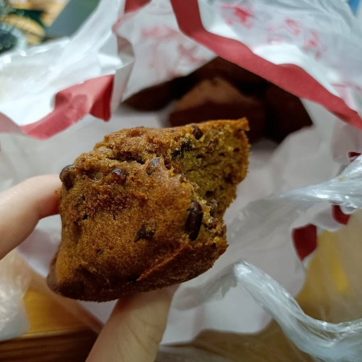
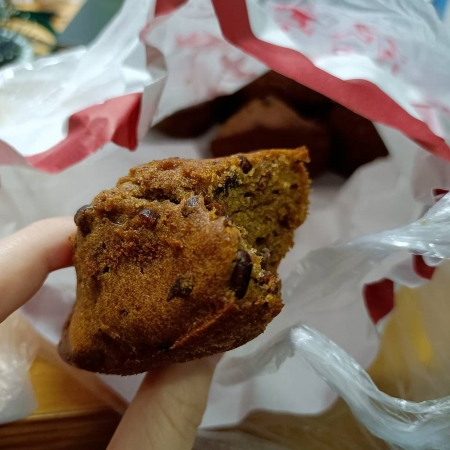
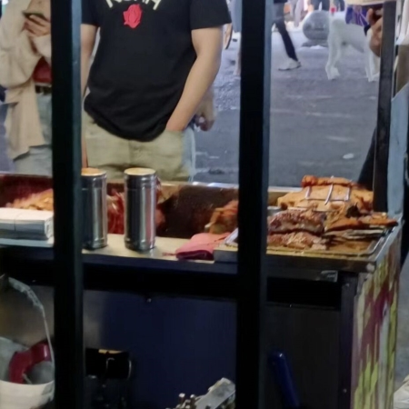

西苑
红枣糕



枣糕也是本学期发现的美食，巨香巨好吃，10元6个。
它的店在西苑（校外），不过在文泰楼那里栏杆可以取到，店主直接送过来。
枣糕的口感真的很不错，但是核桃糕一般。
一般新鲜出炉的枣糕最好吃，然后可以留三四天，我经常拿来当早餐，配一盒豆浆，绝绝子。

这也是我吃的为数不多的西苑的美食之一，大鸡腿！
鸡老大，这个小摊的名字很有特色，它的食物也不赖。
上个学期吃过一次，本学期后期它似乎嗅到了商机，就把摊子搬到了文泰楼那里的栏杆旁，果然很有效。
我一靠近栏杆那里就闻到了烤鸡腿的香味，这是有一次去取枣糕的时候发现的。
于是我们经常去光顾它的生意了，一个鸡腿8元，还可以接受的价格。
虽然鸡腿有点咸，但是它烤的是真好吃。